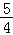

2016年北京市中考数学试题 · 数学解答题 第20题 · 对应解析
20．（5分）（2016•北京）关于x的一元二次方程x2+（2m+1）x+m2﹣1=0有两个不相等的实数根．
（1）求m的取值范围；
（2）写出一个满足条件的m的值，并求此时方程的根．
【解答】解：（1）∵关于x的一元二次方程x2+（2m+1）x+m2﹣1=0有两个不相等的实数根，
∴△=（2m+1）2﹣4×1×（m2﹣1）=4m+5＞0，
解得：m＞﹣

．（2）m=1，此时原方程为x2+3x=0，
即x（x+3）=0，
解得：x1=0，x2=﹣3．